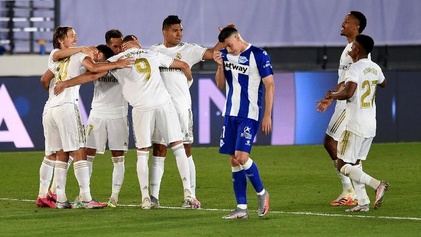

Posted by: Author
Translation to English by: Kezman9

Sports
Real Madrid Vs Alaves: Dapat Penalti Lagi, Los Blancos Menang 2-0
detik.com - Real Madrid won three points against Deportivo Alaves in the 35th Spanish league match. Los Blancos won 2-0, where one goal came back from a penalty.
Bermain di Stadion Alfredo Di Stefano, Sabtu (11/7/2020) dini hari WIB, Madrid dan Alaves berduel ketat sejak kick off. Madrid membuka ancaman di menit kedua. Luka Modric melepaskan tendangan dari luar kotak penalti, namun bolanya melenceng ke sisi kanan. Semenit berselang, Alaves juga menebar bahaya.Playing at the Alfredo Di Stefano Stadium on Saturday (11/07/2020) early morning WIB, Madrid and Alaves have a tight duel since the kick off. Madrid opened the threat in the second minute. Luka Modric fired from outside the penalty box, but the ball deviated to the right side. A minute later, Alaves also spread danger.
Ancaman ditebar tim tamu lewat aksi Joselu. Sundulannya, memanfaatkan crossing Edgar Mendez, menerpa mistar gawang Madrid, yang dijaga Thibaut Courtois.The threat was spread by the visitors through the action of Joselu. His header, utilizing Edgar Mendez's crossing, hit the Madrid crossbar, which was guarded by Thibaut Courtois.
Madrid, yang berusaha menekan Alaves setelahnya, unggul 1-0 di menit ke-11. Penalti diberikan untuk tuan rumah, usai Ferland Mendy ditekel Ximo Navarro di kotak terlarang. Karim Benzema maju menjadi eksektor, dan bisa menceploskan bola ke gawang lawan. Itu menjadi penalti ketiga beruntun Madrid, atau yang keempat dari 6 laga terakhirnya.Madrid, who tried to suppress Alaves afterwards, winning 1-0 in the 11th minute. Penalties are given to the host, after Ferland Mendy was signed by Ximo Navarro in the forbidden box. Karim Benzema is an advanced forward and can strike the ball at the opponent's goal. It was Madrid's third straight penalty, or the fourth of its last 6 matches.

Setelah tertinggal, Alaves beberapa kali punya kans menyamakan skor. Joselu terus menjadi ancaman bagi lini belakang Madrid, namun beberapa peluangnya gagal berbuah gol.
After being left behind, Alaves several times had a chance to equalize the score. Joselu continues to be a threat to the Madrid back line, but several chances failed to bear fruit.
Ada momen ketika wasit Jesus Gil sempat mengalami cedera di menit ke-28. Engkel sang pengadil sempat terkilir, dan dibantu petugas medis Madrid untuk mendapat perawatan. Laga sempat terhenti beberapa saat akibat masalah yang dialami wasit tersebut.There was a moment when referee Jesus Gil had an injury in the 28th minute. Engkel the court was dislocated, and assisted by Madrid medical personnel to get treatment. The match was stopped a few moments due to problems experienced by the referee.
Adapun Madrid nyaris menggandakan skor di masa injury time babak pertama, jika saja upaya Benzema tidak diredam Roberto. Skor 1-0 tetap bertahan saat jeda.As for Madrid almost doubled the score in the first half injury time, if only efforts were not muted Benzema Roberto. Score 1-0 still survive at the break.
Madrid kemudian bisa memperbesar keunggulan, lima menit selepas turun minum. Marco Asensio yang mencatatkan namanya di papan skor, usai meneruskan sodoran Benzema menjadi gol.Madrid can then increase the advantage, five minutes after halftime. Marco Asensio who listed his name on the scoreboard, after continuing sodoran Benzema into a goal.
Gol itu sempat dicek VAR, karena posisi Benzema menjadi sorotan. Namun dalam tayangan ulang, terlihat striker Prancis itu on side, sebelum mengoper ke Asensio. Kedudukan menjadi 2-0 untuk pasukan Zinedine Zidane.The goal was checked VAR, because Benzema's position in the spotlight. But in replays, the French striker was seen on side before passing to Asensio. Position to be 2-0 for Zinedine Zidane's troops.

Alaves tried to reply. However, some of the chances obtained from Edgar Mendez and Joselu can be muted back of Madrid. As for Madrid also continues to look for his third goal. Modric and Rodrygo had time to release a shot on target, but Roberto could be muted.
Di 10 menit akhir, Madrid memasukkan Isco dan Eden Hazard, menggantikan Rodrygo dan Benzema. Isco sempat menebar ancaman dua menit setelah masuk, namun upayanya bisa digagalkan Roberto. Hingga laga bubar, skor 2-0 tetap bertahan.In the final 10 minutes, Madrid added Isco and Eden Hazard, replacing Rodrygo and Benzema. Isco had spread the threat two minutes after entering, but his efforts could be thwarted Roberto. Until the game broke up, the score remained 2-0.
Kemenangan ini membuat Madrid masih memimpin klasemen Liga Spanyol dengan raihan 80 poin dari 35 laga, atau sementara unggul 4 poin dari Barcelona. Sementara Alaves berada di peringkat 17 dengan 35 poin, hanya terpaut 3 angka dari zona degradasi.This victory makes Madrid still lead the Spanish League standings with 80 points from 35 matches, or while winning 4 points from Barcelona. While Alaves is ranked 17th with 35 points, only 3 points adrift of the relegation zone.
Susunan PemainReal Madrid: Courtois, Vazquez, Eder, Varane, Mendy, Modric (Valverde 70'), Casemiro (Brahim Diaz 90+4'), Kroos, Asensio (Vinicius 70'), Rodrygo (Isco 82'), Benzema (Hazard 82')
Alaves: Roberto, Marin, Ely, Laguardia, Ximo (Aguirregabiria 23'), Edgar (Sainz 68'), Fejsa (Abdallahi 55'), Camarasa, Burke, Perez (Rioja 55'), Joselu (Jose Luis 69')
Line-up
Real Madrid: Courtois, Vazquez, Eder, Varane, Mendy, Modric (Valverde 70 '), Casemiro (Brahim Diaz 90 + 4'), Kroos, Asensio (Vinicius 70 '), Rodrygo (Isco 82'), Benzema (Hazard 82 ') ')
Alaves: Roberto, Marin, Ely, Laguardia, Ximo (Aguirregabiria 23 '), Edgar (Sainz 68'), Fejsa (Abdallahi 55 '), Camarasa, Burke, Perez (Rioja 55'), Joselu (Jose Luis 69 ')